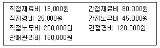
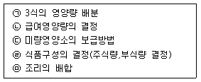

조리기능장 (2004-07-18 기출문제)
1과목: 임의 구분
1. 공중보건학의 개념과 유사한 학문이라고 할 수 없는 것은?
- 사회의학
- 지역사회의학
- 치료의학
- 건설의학
(정답률: 57%)

2. 식기소독에 가장 적당한 소독제는?
- 50% 알콜 용액
- 역성비누
- 포르말린
- 승홍수
(정답률: 64%)
3. 생물화학적 산소 요구량(BOD)이란?
- 수중 생물의 생존에 필요한 산소량
- 물에 용존되어 있는 산소량
- 대기 중의 산소가 하수에 흡입되는 양
- 하수의 유기물 산화과정에 사용되는 용존산소의 양
(정답률: 53%)
4. 국내 상재 전염병의 3대 관리원칙이라 할 수 없는 것은?
- 검역강화
- 전파예방
- 면역증강
- 예방되지 못한 환자의 처치
(정답률: 27%)
5. 경구전염병의 특징과 거리가 먼 것은?
- 2차 감염이 거의 발생하지 않는다.
- 미량의 균량이라도 감염을 일으킨다.
- 잠복기가 비교적 길다.
- 집단적으로 발생한다.
(정답률: 72%)
6. 광절열두조충의 제 2중간 숙주는?
- 잉어, 붕어
- 돼지고기
- 송어, 연어
- 고래고기
(정답률: 53%)
7. 인간이 생존하는데 중요한 물, 공기 등은 어느 환경에 해당되는가?
- 이화학적 환경
- 생물학적 환경
- 인위적 환경
- 사회적 환경
(정답률: 25%)
8. 병원체가 매개곤충의 다리나 체표에 부착되어 아무런 변화없이 전파되는 것을 무엇이라 하는가?
- 비말전파
- 기계적전파
- 경란형전파
- 증식형전파
(정답률: 50%)
9. 역학의 목적에 해당하지 않는 것은?
- 질병발생 요인의 규명
- 임상치료기술의 개발
- 보건의료 기획을 위한 자료제공
- 질병유행의 감시 역할
(정답률: 55%)
10. 고혈압을 예방하기 위한 방법으로 옳지 않은 것은?
- 염분 함유량이 많은 식품을 피한다.
- 충분한 휴식과 수면을 취한다.
- 정상체중을 유지하도록 노력한다.
- 동물성 지방식품을 많이 섭취한다.
(정답률: 75%)
11. 바다생선회를 먹을 때 감염될 수 있는 기생충 질환은?
- 아니사키스증
- 선모충증
- 트리코모나스
- 동양모양선충증
(정답률: 66%)
12. 산업안전보건법에 의거 근로자에 대하여 주기적으로 실시하는 건강진단은?
- 일반건강진단
- 특수건강진단
- 수시건강진단
- 임시건강진단
(정답률: 70%)
13. 식품의 부패에 영향을 미치는 요인으로 가장 거리가 먼 것은?
- 온도
- 수분
- 기압
- 식품 중의 영양성분
(정답률: 50%)
14. 부패된 어류에 나타나는 현상은?
- 비늘에 광택이 있음
- 아가미 색깔이 선홍색임
- 육질에 탄력성이 있음
- 물에 담갔더니 떠올랐음
(정답률: 70%)
15. 호염 미생물인 장염 비브리오균은 어느 식염농도에서 잘 번식하는가?
- 2∼3%
- 7∼8%
- 10∼11%
- 13∼14%
(정답률: 71%)
16. 통조림에 번식하여 용기팽창의 원인이 되는 혐기성 포자형성세균은?
- 바실러스 서브틸리스(Bacillus subtilis)
- 클로스트리디움 보툴리늄(Clostridium botulinum)
- 바실러스 세레우스(Bacillus cereus)
- 클로스트리디움 니그리피칸스(Clostridium nigrificans)
(정답률: 79%)
17. 복어의 독성분인 것은?
- 테트로도톡신(tetrodotoxin)
- 삭시톡신(saxitoxin)
- 베네루핀(venerupin)
- 아플라톡신(aflatoxin)
(정답률: 72%)
18. 바지락에 들어 있는 독소는?
- 뉴린
- 베네루핀
- 엔테로톡신
- 아마니타톡신
(정답률: 69%)
19. 합성 플라스틱(plastic) 제품에서 용출될 수 있는 유해 물질인 것은?
- 포르말린(formalin)
- 페릴라르틴(perillartine)
- 롱갈릿(rongalit)
- 삼염화질소(nitrogen trichloride)
(정답률: 58%)
20. 다음의 곰팡이독의 원인식품과 주된 증상이 잘못 연결된 것은?
- 아플라톡신(Aflatoxin) - 땅콩 - 간장독
- 시트레오비리딘(Citreoviridin) - 쌀 - 신경독
- 류테오스키린(Luteoskyrin) - 황변미 - 간장독
- 시트리닌(Citrinin) - 쌀 - 신경독
(정답률: 40%)
2과목: 임의 구분
21. 식품첨가물의 사용목적이 아닌 것은?
- 보존성 향상
- 기호성 향상
- 식품의 품질개량
- 유해물질의 해독 작용
(정답률: 43%)
22. 육제품의 색깔을 좋게 하기 위해 사용하는 첨가물은?
- 착향료
- 보존제
- 발색제
- 강화제
(정답률: 61%)
23. 식품조리에 있어서 젤(gel) 상태를 이용한 것과 거리가 가장 먼 것은?
- 푸딩
- 휘핑 크림
- 묵
- 양갱
(정답률: 79%)
24. 곰탕, 설렁탕의 국물이 뽀얗게 되는 것을 가장 잘 설명한 것은?
- 뼈도가니에서 우러난 칼륨이 유화제로 작용하기 때문
- 뼈와 살코기에서 우러난 단백질의 흰색 때문
- 뼈에서 우러난 인지질 등에 의한 유화현상 때문
- 뼈속의 칼슘과 비타민이 유화제로 작용하기 때문
(정답률: 69%)
25. 쌀밥을 실온에 방치할 때 일어나는 현상은?
- α 전분이 β 전분으로 되어 소화율이 저하된다.
- α 전분이 β 전분으로 되어 소화율이 증가한다.
- β 전분이 α 전분으로 되어 소화율이 저하된다.
- β 전분이 α 전분으로 되어 소화율이 증가한다.
(정답률: 56%)
26. 일반적으로 다음 연결이 잘못된 것은?
- 강력분 - 식빵
- 강력분 - 스파게티
- 박력분 - 쿠키
- 박력분 - 국수
(정답률: 58%)
27. 생선, 돼지고기 또는 닭고기 등을 조리하면서 생강을 넣는 경우에 탈취 효과를 높이기 위해 생강을 넣는 시기와 원리를 가장 잘 짝지은 것은?
- 처음부터 - 탄수화물의 열변성
- 끓은 후 - 단백질의 열변성
- 완성되기 직전 - 지방질의 열변성
- 완성된 후 - 진저론의 열변성
(정답률: 73%)
28. 난백의 기포 생성량에 도움을 줄 수 있는 식품은?
- 기름
- 소금
- 우유
- 레몬쥬스
(정답률: 36%)
29. 다음의 채소들을 조리할 때 변색을 방지하기 위한 조리방법으로 가장 옳게 설명된 것은?
- 시금치 - 다량의 끓는물에 소량의 소금을 넣고 뚜껑을 닫은채 데친다.
- 비트 - 소량의 물에 레몬즙을 넣고 뚜껑을 연채 데친다.
- 양배추 - 소량의 식초를 넣은 물에서 섬유소가 연해질 때까지만 살짝 데친다.
- 컬리플라워 - 소량의 소다를 넣은 물에서 충분히 데친다.
(정답률: 60%)
30. 식단작성의 기본조건 중 잘못된 것은?
- 균형잡힌 식사가 되도록 영양면에서 고려해야 한다.
- 매일 1끼씩 분식을 하여 경제적인 면에서 지출을 최대한 줄인다.
- 여러 종류의 식품을 사용하여 여러 형태의 맛을 즐길 수 있도록 한다.
- 조리하는 사람의 능력, 식단내용, 조리기구, 주방의 구조 및 설비 등을 고려해야 한다.
(정답률: 64%)
31. 쌀을 저온저장할 때 장점이 아닌 것은?
- 해충에 의한 피해가 적다.
- 호흡에 의한 품질저하가 적다.
- 외관이나 식미가 좋다.
- 수분감소로 인한 중량감소가 크다.
(정답률: 56%)
32. 채소, 불린 쌀, 잣, 깨 등을 곱게 갈기 위해 사용되는 기기는?
- 블랜더(Blender)
- 슬라이서(Slicer)
- 컷터(Cutter)
- 쵸퍼(Chopper)
(정답률: 64%)
33. 단체급식시설에 있어서 직접 재료비에 해당되는 것은?
- 급식재료비
- 급료
- 보험료
- 수도료
(정답률: 67%)
34. 식품의 가공제로 소비된 물적 요소를 무엇이라 하는가?
- 경비
- 인건비
- 재료비
- 간접비
(정답률: 50%)
35. 습열조리의 특징으로 가장 올바른 것은?
- 열효율이 낮고 수용성 성분의 용출이 적다.
- 식품부터 뜨거워져 갈색화가 일어나지 않는다.
- 식품이 보유하고 있는 수분 외에 별도의 물을 첨가하여 가열하는 조리법으로 비교적 고르게 익을 수 있는 장점이 있다.
- 식품표면 단백질의 응고로 식품 본래의 맛을 유지할 수 있다.
(정답률: 75%)
36. 복어조리에 대한 설명으로 올바르지 않은 것은?
- 복어조리시 가장 치명률이 높은 위험부위는 난소와 간장이다.
- 복어에는 테트로도톡신(tetrodotoxin)이라는 맹독성이 있다.
- 복어의 독은 일종의 신경독으로 주로 말초신경을 마비시켜 수족과 전신의 운동신경, 지각신경 등을 마비시킨다.
- 복지리란 복어회와 같은 의미로 두껍게 썰면 먹을 때 어려우므로 얇게 썬다.
(정답률: 68%)
37. 조리과정 중 일어나는 어육의 변화로 틀린 것은?
- 생선껍질과 근육섬유를 둘러싸고 있는 단백질은 글리신(glycin)이다.
- 어육에 식염을 2-6% 첨가하면 삼투압에 의하여 어육은 투명도가 증가하고 점성을 나타내며 보수성이 증가한다.
- 생선을 초에 담그면 단백질이 응고하여 질감이 다르게 된다.
- 생선은 가열에 의해 껍질이 수축하면 지방층이 용해되어 외부로 지방이 녹아 나온다.
(정답률: 27%)
38. 훈연법에 대한 설명으로 맞는 것은?
- 냉훈은 풍미는 좋으나 장기간 보존할 수 없다.
- 연기에 함유되어 있는 비휘발성 성분이 식품에 스며들게 하는 방법이다.
- 냉훈은 25℃의 먼 불에서 1∼3주간 충분히 훈연하는 것이다.
- 온훈은 100℃에서 3시간 정도 훈연하는 방법이다.
(정답률: 38%)
39. 중국요리의 용어에 대한 설명이 바르게 연결된 것은?
- 죈 - 뼈가 있는 재료로 만든 것이다.
- 완쯔 - 재료를 갈아서 완자처럼 둥글게 만든 것이다.
- 빠오 - 둥글고 얇게 지져낸 것이다.
- 훼이 - 기름에 튀긴 것이다.
(정답률: 67%)
40. 해동에 관한 설명 중 틀린 것은?
- 육류는 완만 해동을 하면 녹은 얼음이 세포나 조직에 재흡수 되기 때문에 더 맛있게 느껴진다.
- 어패류나 육류 등은 저온에서 서서히 해동하는 것이 고온에서 급속히 해동하는 것 보다 육질이 더 좋다.
- 해동이 끝날 때의 온도는 식품의 모든 부분에서 균일하게 낮아야 한다.
- 해동전의 식품의 품질은 급속 해동 후의 품질에 영향을 미치지 않는다.
(정답률: 45%)
3과목: 임의 구분
41. 설탕보다 강한 단맛을 가지며 특유의 쓴맛을 가지므로 0.02%의 농도로 사용하는 인공감미료는?
- 올리고당
- 스테비오사이드
- 아스파탐
- 사카린
(정답률: 64%)
42. 도마를 세정, 소독하는 데 사용되는 것은?
- 살균등
- 열탕소독
- 약품소독
- 증기소독
(정답률: 36%)
43. 다음을 보고 제조원가를 산출하면 얼마인가?

- 243,000원
- 343,000원
- 403,000원
- 488,000원
(정답률: 40%)
44. 식품을 계량할 때 옳은 방법이 아닌 것은?
- 밀가루는 측량 전에 체로 친 다음, 누르지 말고 수북히 담아서 칼이나 주걱으로 깎은 후에 측정한다.
- 흑설탕은 계량컵에 담아서 위를 칼로 밀어낸다.
- 조청, 기름, 꿀과 같이 점성이 높은 것은 분할된 컵으로 계량한다.
- 지방은 실온에서 부드러워졌을 때 계량컵에 눌러 담고 유연한 고무주걱이나 칼로 밀어서 덜어낸다.
(정답률: 48%)
45. 조리의 예비조작 중 씻기 쉬운 식품이 구비해야 할 조건으로 틀린 것은?
- 형태가 평평해서 요철이 적은 경우
- 물이 조직내부로 침투가 어려운 경우
- 오염물이 지용성인 경우
- 세균이나 기생충알 등 증식의 염려가 있는 유해물이 부착되어 있지 않은 경우
(정답률: 55%)
46. 한식 상차림의 설명이 틀린 것은?
- 주안상의 음식은 각색포, 전, 편육, 찜, 고추장찌개, 신선로, 겨자채, 김치 등이 적당하다.
- 돌상에는 백설기, 차수수경단, 송편, 생실과 쌀, 면, 대추를 차려 놓는다.
- 폐백상 차림은 유밀과 강정, 전과 편육, 초, 적을 놓고 국수장국이 꼭 있어야 한다.
- 제상차림은 홍동백서에 따라 붉은 과일, 국, 생선은 동쪽, 흰 과일, 밥, 고기는 서쪽에 놓는다.
(정답률: 42%)
47. 간장의 성분에 관한 연결이 틀린 것은?
- 간장의 향 - 메티오놀
- 간장의 구수한 맛 - 지미성분
- 간장의 색 - MSG
- 간장의 pH - 약산성
(정답률: 66%)
48. 단체급식의 식단작성 순서로 옳은 것은?

- ㉠ - ㉡ - ㉢ - ㉣ - ㉤
- ㉡ - ㉠ - ㉣ - ㉢ - ㉤
- ㉤ - ㉠ - ㉢ - ㉣ - ㉡
- ㉠ - ㉢ - ㉤ - ㉡ - ㉣
(정답률: 50%)
49. 단체급식에서 식품재료 구입시 고려할 사항이 아닌 것은?
- 영양가
- 계절식품
- 가격
- 장기보존성
(정답률: 65%)
50. 항상 일정량의 식품재료를 보관해 두는 것을 무엇이라고 하는가?
- 표준재고량
- 보존재고량
- 긴급재고량
- 상시재고량
(정답률: 56%)
51. 표준조리 레시피(standardized recipe)를 이용한 식단 관리시 기대하기 어려운 것은?
- 조리된 음식의 일정한 품질 향상
- 조리원과 관리자의 시간 절약
- 고객의 기호 충족
- 조리원들의 훈련 용이
(정답률: 53%)
52. 다음 설명 중 올바르지 않은 것은?
- 식품구성량 계산에서 단백질 성인 환산치는 고기, 생선, 알 및 콩류의 양에 곱한다.
- 단백질 총 공급량의 1/3이상은 동물성식품에서 섭취한다.
- 영양량 산출은 지방 → 단백질 → 탄수화물 → 칼슘, 무기질, 비타민 순으로 한다.
- 열량공급을 위해 바람직한 곡류 및 감자류의 섭취율은 65%이다.
(정답률: 48%)
53. 식품에 점성을 주는 검류 중 해조류에서 얻을 수 없는 것은?
- 한천(agar)
- 알긴(algin)
- 카라기난(carrageenan)
- 구아 검(guar gum)
(정답률: 35%)
54. 단백질의 등전점을 이용하여 만든 식품은?
- 치즈
- 크림
- 피단
- 버터
(정답률: 39%)
55. 소화된 영양물질은 주로 어디에서 흡수되는가?
- 간장
- 위
- 대장
- 소장
(정답률: 65%)
56. 양파를 알칼리 용액으로 조리하면 색이 노랗게 변하는 것은 무슨 색소 때문인가?
- 엽록소
- 플라본색소
- 안토시안색소
- 카로틴색소
(정답률: 53%)
57. 난황 중에 함유되어 있는 인지질로 유화력이 있는 것은?
- 레시틴
- 알리신
- 콜레스테롤
- 카페인
(정답률: 69%)
58. 우유를 응고시키는 요소는?
- 설탕
- 산
- 식용유
- 냉장
(정답률: 77%)
59. 두부의 제조와 관계있는 단백질은?
- 알부민(albumin)
- 글리시닌(glycinin)
- 카제인(casein)
- 아비딘(avidin)
(정답률: 64%)
60. 아밀라아제(amylase)를 주로 이용하여 만든 것이 아닌 것은?
- 물엿
- 제빵
- 포도당
- 간장
(정답률: 40%)